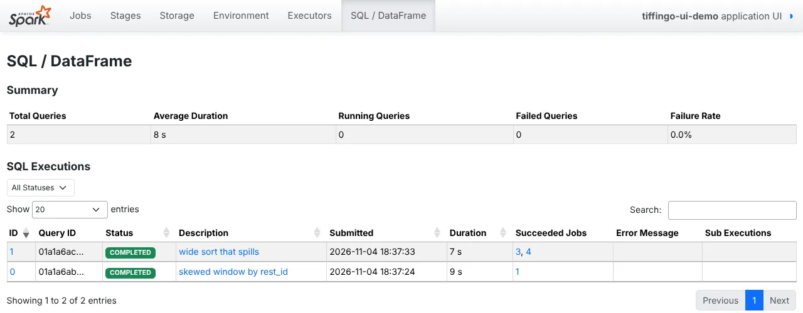

“The job is slow. Why?”
The TiffinGo on-call channel gets the same message every week: “the job is slow today”. Some engineers restart it, some double the memory. The senior engineer opens the Spark UI and has an answer in two minutes.
The TiffinGo on-call channel gets the same message every week: “the job is slow today”. Some engineers restart it, some double the memory. The senior engineer opens the Spark UI and has an answer in two minutes.
The Spark web UI is served by the driver (port 4040 by default) and shows the application’s jobs, stages, tasks, storage, environment, executors and SQL executions. A job is triggered by an action, split into stages at shuffle boundaries, each made of tasks (one per partition). The stage page shows summary metrics (min, 25th percentile, median, 75th percentile, max) for duration, GC time, input, shuffle read/write and spill, and a per-task table. The SQL / DataFrame tab shows the physical plan as a graph with per-operator metrics (rows, time, sizes). After an application ends, the same pages are available in the Spark History Server from event logs. Troubleshooting means locating the slowest stage and interpreting its metric distribution.
The Spark UI shows every job, stage and task with timings and sizes. To find why a job is slow, open the slowest query, then the slowest stage, then compare the slowest task with the typical task. The pattern tells you whether it is skew, spill, too many small tasks or something else.
| What you see | Likely cause | Lesson |
|---|---|---|
| Max task ≫ median, one task reads most records | Data skew | 8.3 |
| All tasks spill, durations even | Tasks too big for memory | 8.4 |
| Thousands of tasks of a few ms | Too many partitions / small files | 8.1 |
| Two big Exchanges before a join | Sort-merge where broadcast would do | 8.2 |
| High GC time (> 10%) | Memory pressure, too many objects | 8.4 |
| Failed tasks, lost executors | OOM, container kills, bad nodes | 8.4 / 8.5 |
| Long gaps with no running tasks | Driver work, waiting for executors | 8.5 |
spark.eventLog.enabled=true./api/v1/applications/<app>/stages/<id>/<attempt>/taskSummary.| Tab | Question it answers | Look at |
|---|---|---|
| SQL / DataFrame | Which query is slow, what plan ran? | Duration, plan graph, rows per node, Exchanges |
| Jobs | Which action is slow? | Duration, stages, failed stages |
| Stages | Where is the time inside a job? | Summary metrics, task table, event timeline |
| Storage | What is cached, how much? | Size in memory/disk, fraction cached |
| Executors | Are executors healthy? | Failed tasks, GC time, shuffle, dead executors |
| Environment | Which settings were used? | Spark properties actually in effect |
spark.ui.retainedJobs, retainedStages). For production, enable event logs (spark.eventLog.enabled=true, spark.eventLog.dir) and run a History Server, or you will be debugging yesterday’s failure from logs alone. Use sc.setJobDescription() so jobs show readable names instead of “save at …”.
All screenshots and numbers are real: Spark 4.3.0, local[2] with a 1 GB driver, AQE off, 4 shuffle partitions. Query 0: a window over restaurants where one has 60% of 6M orders (Lesson 8.3). Query 1: a sort of 5M wide rows (Lesson 8.4). The UI was kept alive and captured with a headless browser.
sc = spark.sparkContext
sc.setJobDescription("skewed window by rest_id")
skewed_window.write.format("noop").mode("overwrite").save()
sc.setJobDescription("wide sort that spills")
wide_sort.write.format("noop").mode("overwrite").save()
setJobDescription make the two queries easy to find.SQL / DataFrame → query 0 → Plan Visualization
rest_id. The blue boxes are whole-stage-codegen blocks with total task time: 8.0 s in the Sort block (stage 2) vs 3.5 s for scanning. So the time is after the shuffle. Next: that stage.Stages → stage 2 → Summary Metrics
Stages → stage 6 → Summary Metrics
Kai UI problems code ki chhoti aadaton se aate hain. Lab ke real numbers:
# plan size and timing| Symptom in UI | Habit | Fix |
|---|---|---|
| Huge analysed plan, slow driver | withColumn in a loop | one select / withColumns |
| Long full-scan job for a check | count() > 0 | isEmpty() |
| Many rename Project nodes | chained withColumnRenamed | toDF(*cols) |
Left: real UI metrics. Right: what each pattern means.
Three live scenarios follow: a skewed join, thousands of tiny tasks, and a failure found in the History Server.
Real-time scenario 1Finding skew in the UI. (Typical; pattern from our screenshots.)
Too many tasks in the UI. (Typical.)
History Server and executor failures. (Typical.)
Runbooks list the UI path: SQL tab → slowest stage → task summary → symptom table.
Event logs kept for 30 days let teams compare a bad run with a good one.
Jobs read their own stage metrics via the REST API and alert on skew or spill.
New pipelines attach a screenshot of the SQL plan graph showing the expected joins.
Teams find the stages with the most task time and fix those first.
Examples are simplified.